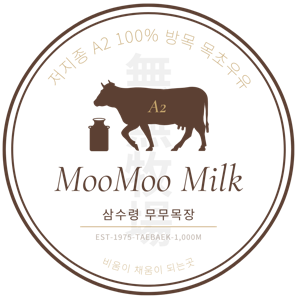
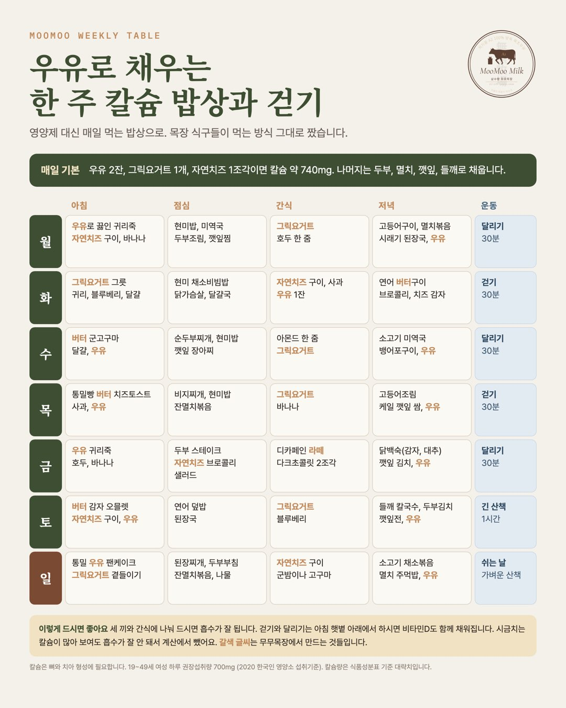
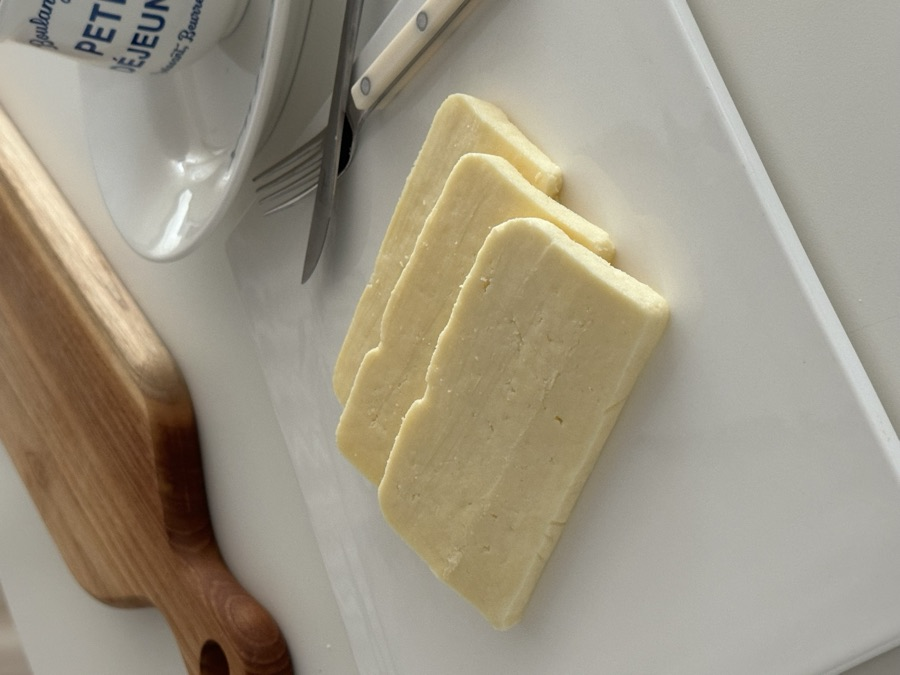
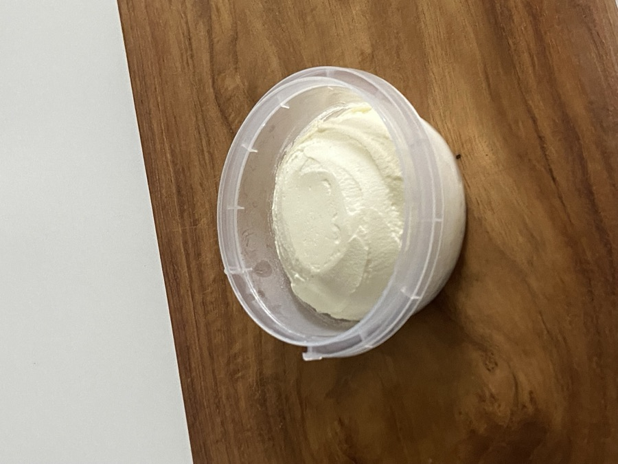

태백 삼수령 초지에서 풀을 뜯는 저지 젖소의 우유로 만듭니다. 우유, 그릭요거트, 자연치즈, 버터 네 가지입니다. 저희 가족이 매일 먹는 것들이라 무엇을 넣고 무엇을 빼는지 그대로 적어 두었습니다.
아침에 짠 우유를 그날 병에 담습니다.
같은 우유로 만든 치즈와 버터입니다.
뜻이 같은 생산자들의 먹거리와 엮었습니다. 다른 브랜드 상품은 각 브랜드 스토어에서 주문합니다.
따뜻한 밥에 기버터 한 숟가락을 녹이고, 비프칩을 손으로 찢어 올린 뒤 간장 몇 방울. 풀 먹은 소고기와 풀 먹은 소의 버터입니다.
팬을 세게 달구고 기버터를 두릅니다. 버터처럼 검게 타지 않아 겉이 고르게 갈색으로 익어요.
노릇하게 구운 자연치즈 옆에 비프칩을 곁들이면 단 것 없이 든든한 간식이 됩니다.
사워도우를 구워 수제버터를 바르고, 바삭하게 구운 베이컨을 올립니다.
영양제 대신 밥상으로 칼슘을 채우는 한 주 식단입니다.

5분이면 되는 것만 골랐습니다.

